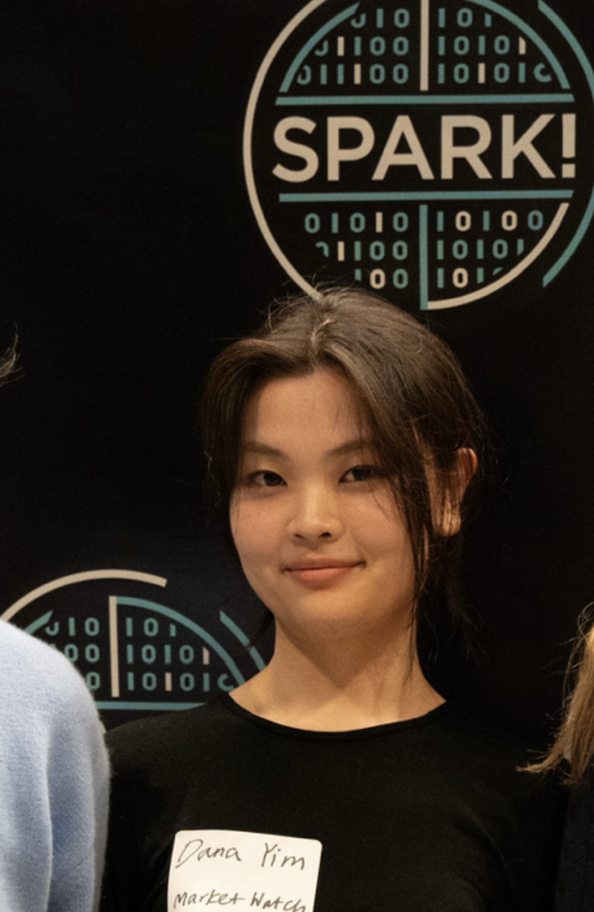

Home
My name is Dana Yim, and I am a full-time undergraduate student at Boston University.
I would like to further my academic studies in computer science by gaining hands-on experiences.
Welcome to my website. Here, you will find my Employment and Projects history, as well as other information that might be of interest to you.